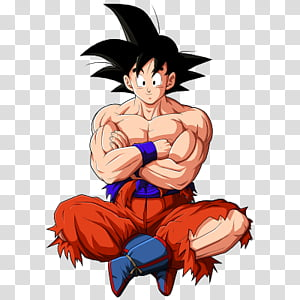

Originalmente batizado como Kakarotto, Goku é membro de uma raça fictícia de extraterrestres, os Saiyajins. Logo após seu nascimento, Goku é enviado à Terra para destruir as formas de vida locais e preparar o planeta para venda no mercado negro intergalático. Encontrado e criado pelo eremita Son Gohan, Goku sofre deamnésia durante a infância graças a uma pancada na cabeça, esquecendo sua missão inicial e passando a ter como objetivo se tornar mais forte, simplesmente pelo prazer da tarefa. No início da série, Goku conhece uma adolescente extremamente inteligente chamada Bulma, o ladrão Yamcha e duas criaturas transmorfas, Oolong ePual. Também encontra quem viria a ser seu melhor amigo, Kuririn, enfrenta a Red Ribbon, o temível Tao Pai Pai, o terrível Piccolo Daimaoh e outros guerreiros durante seu treinamento. Ao participar de diversos torneios de artes marciais, Goku também enfrenta seus futuros aliados Tenshin Han e Chaos, assim como Piccolo.
